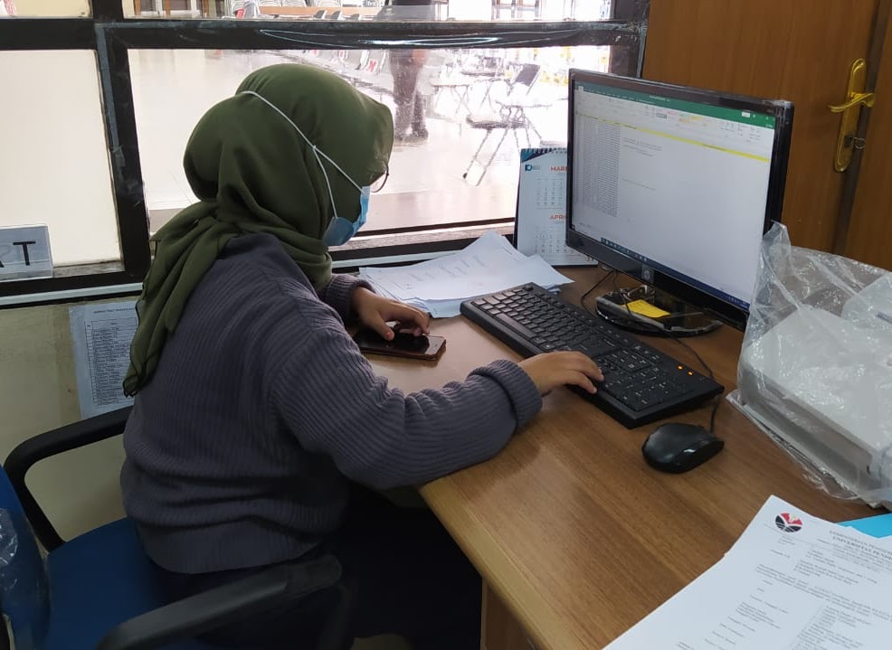
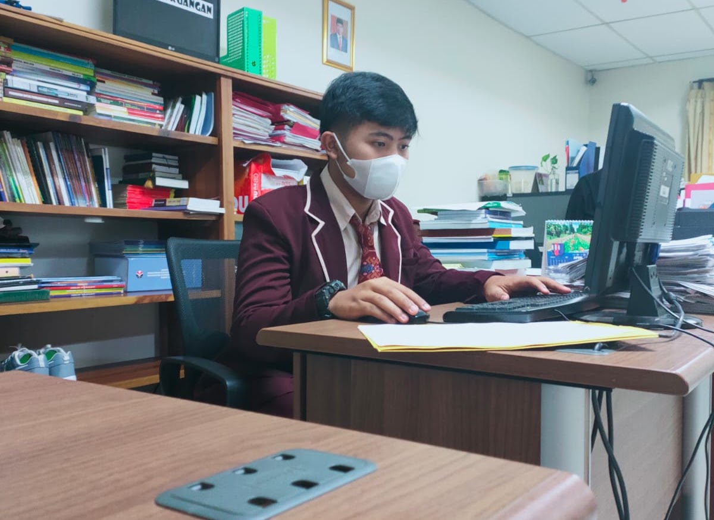
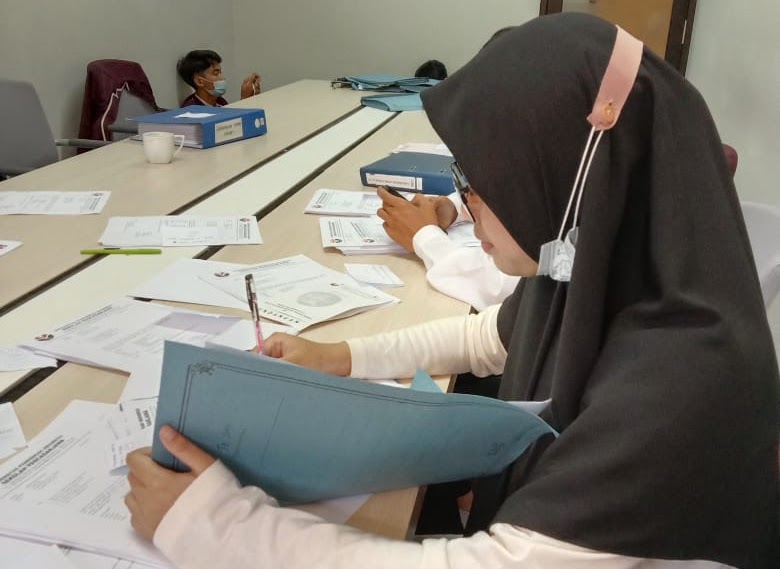
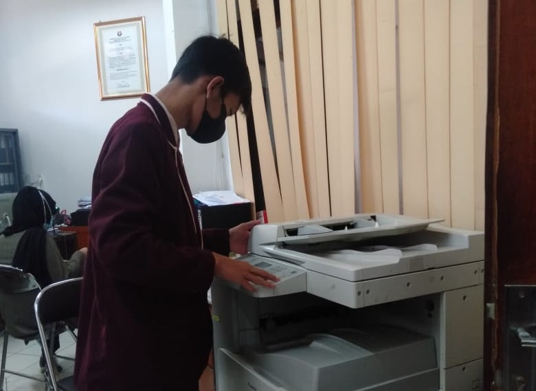
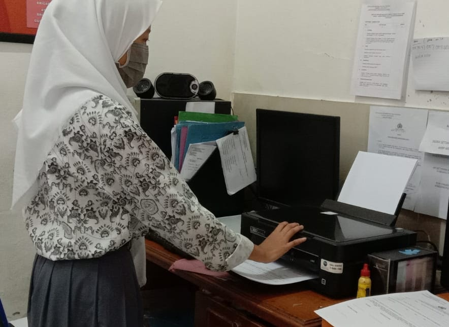

OTKP
(Otomatisasi Tata Kelola Perkantoran)
OTKP (Otomatisasi Tata Kelola Perkantoran)

Deskripsi Singkat
Jurusan Otomatisasi Tata Kelola Perkantoran (OTKP) merupakan salah satu Kompetensi Keahlian dari Program Keahlian Manajemen Perkantoran pada Bidang Keahlian Bisnis dan Manajemen. Jurusan OTKP akan membekali siswa dengan kemampuan pada bidang administrasi baik secara pengetahuan, keterampilan, dan sikap dalam menyelesaikan pekerjaan-pekerjaan perusahaan atau kantor.
Mata Pelajaran Produktif
- Otomatisasi Tata Kelola Kepegawaian
Pokok bahasan pada mata pelajaran ini adalah tentang administrasi kepegawaian, perencanaan kebutuhan pegawai, prosedur pengadaan pegawai, hingga penilaian kinerja pegawai. - Otomatisasi Tata Kelola Keuangan
Pada mata pelajaran otomatisasi tata kelola keuangan, siswa diajarkan untuk dapat memahani tentang ruang lingkup administrasi keuangan, mengidentifikasikan fungsi administrasi keuangan, menguraikan tujuan administrasi keuangan, hingga mengemukakan dasar administrasi keuangan berdasarkan kondisi nyata di tempat kerja. - Otomatisasi Tata Kelola Sarana dan Prasarana
Sesuai dengan judulnya, mata pelajaran ini membekali siswa dengan pengetahuan tentang administrasi dan regulasi sarana prasarana kantor, dan K3 (Kemananan, Kesehatan, dan Keselataman kerja) perkantoran. Siswa juga akan diajarkan tentang penggunaan mesin-mesin kantor dan mesin komunikasi kantor hingga penataan interior dan tata ruang kantor. - Otomatisasi Tata Kelola Humas dan Keprotokolan
Pokok bahasan pada mata pelajaran ini antara lain adalah pengetahuan dan keterampilan tentang regulasi bidang kehumasan beserta etika dan kode etiknya hingga perencanaan program kehumasan. - Produk Kreatif dan Kewirausahaan
Pada mata pelajaran ini para siswa SMK dibentuk untuk menjadi pribadi yang siap kerja. Materi yang dibahas antara lain bagaimana memahami karakteristik wirausahawan, memahami peluang usaha produk dan jasa, hingga proses pengajuan hak atas kekayaan intelektual. - Ekonomi Bisnis
Mata pelajaran ekonomi bisnis akan siswa akan mendapatkan pada jurusan ini. Hal yang dipelajari berupa permintaan dan penawaran, termasuk pula mengenai produksi, distribusi, dan konsumsi. Jadi, di jurusan ini siswa akan dibekali dengan ilmu dasar ekonomi bisnis. - Korespondensi
Mata pelajaran akan membekali siswa agar dapat menguasai berbagai kegiatan perkantoran mulai dari komunikasi, etika di kantor, bertelepon sampai pembuatan surat. - Administrasi Umum
Materi administrasi umum atau biasa pula dikenal sebagai pengantar administrasi perkantoran adalah materi dasar yang diajarkan di jurusan OTKP. Disini, siswa akan mendapatkan materi dasar mengenai administrasi. - Kearsipan
Kearsipan sangat penting untuk dipelajari di jurusan OTKP, karena pekerjaan OTKP dituntut untuk selalu berhubungan dengan berkas dan surat-menyurat. Untuk itu, kemampuan dalam mengarsip akan sangat dibutuhkan agar siswa dapat menata berkas dengan baik. - Administrasi Umum
Perkembangan zaman yang terus maju berjalan seiring dengan kegiatan administrasi yang terus dituntut untuk dapat menyesuaikan diri. Untuk itu, siswa akan mempelajari mengenai teknologi perkantoran dan bagaimana cara mengoperasikannya. Karena kegiatan administrasi yang dapat mengikuti perkembangan teknologi akan menjadikan pekerjaan lebih efektif dan efisien. - Simkomdig
Simulasi dan Komunikasi Digital yang merupakan media pembelajaran dengan menggunakan perangkat digital. Simkomdig mempelajari mengenai penggunaan berbagai macam aplikasi dan menjelaskan perangkat yang ada di komputer serta perangkat pendukung lainnya. Di jurusan OTKP menggunakan aplikasi perkantoran guna menunjang pekerjaan. - Produk Kreatif dan Kewirausahaan
Pada mata pelajaran ini para siswa SMK dibentuk untuk menjadi pribadi yang siap berwirausaha. Materi yang dibahas antara lain bagaimana memahami karakteristik wirausahawan, memahami peluang usaha produk dan jasa, hingga proses pengajuan hak atas kekayaan intelektual.
Prospek Kerja
- Resepsionis
Untuk kamu yang memiliki kemampuan berkomunikasi yang baik, kamu bisa menjadi resepsionis hotel, perusahaan dan lain-lain. Karena setiap perusahaan yang bergerak di bidang apapun pasti akan membutuhkan posisi resepsionis untuk menjadi bagian front office perusahaan mereka. - Sekretaris
Tugas utama seorang sekretaris ialah untuk menyaring informasi yang berkaitan dengan bisnis perusahaan bagi pimpinan serta menjadi media perekam, penyimpan, dan pengingat kegiatan atasan di perusahaan. - Staf Administrasi
Tugas utama seorang staf administrasi adalah untuk melakukan berbagai pelayanan kantor yang berkaitan dengan administrasi untuk mendukung kelancaran operasional perusahaan. - Asisten Sekretaris
Sebagai seorang asisten sekretaris, kamu akan memiliki tugas untuk menerima berbagai panggilan telepon dan jadwal pertemuan pimpinan serta mengatur jadwal pertemuan, konferensi, hingga pemesanan perjalanan untuk para staf kantor. - Staf Personalia
Jabatan staf personalia berbeda dengan HRD. Staf personalia lebih banyak bertugas dan bertanggung jawab untuk hal-hal seperti database karyawan, payroll, atau pembayaran pembayaran lainnya. Staf personalia juga bertugas untuk mengelola hal-hal seperti absensi karyawan, pinjaman karyawan, atau pencatatan cuti tahunan setiap karyawan. - Event Organizer
Saat ini industri event sedang berkembang dengan pesat seiring dengan kebutuhan hiburan para masyarakat urban. Hal ini terlihat dari banyaknya event-event atau kegiatan yang digelar di berbagai lokasi hampir setiap akhir pekan.
DOKUMENTASI KEGIATAN




